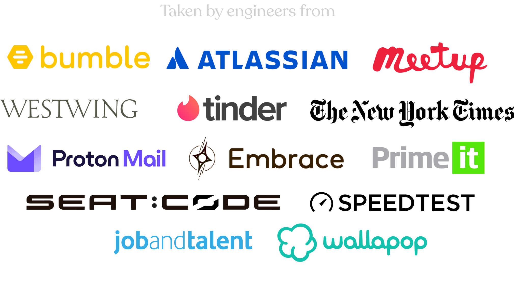
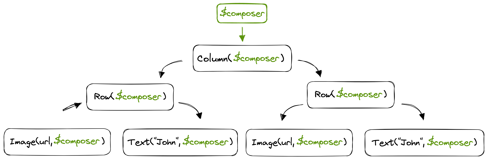
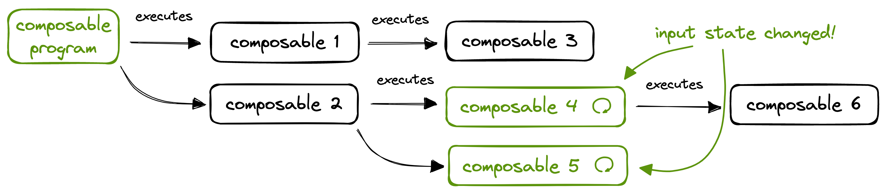
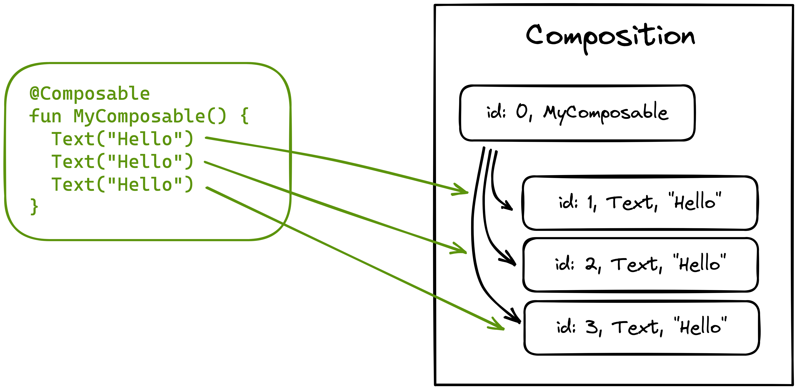

Jetpack Compose and internals cohort course 🧑💻
Master Jetpack Compose and its internals. Learn how to work efficiently with it by going through the weekly stages of this course. Join others and interact with them and the trainer while progressing over the content together 🚀

Can I take this course?
You can take it either if you are starting with Jetpack Compose or you want to master it. Only medium Android level is required (UI, architecture, testing), and medium Kotlin level (suspend + coroutines).
What I get
By enrolling you get access to all these things, all inclusive of the one-time signup fee. Each cohort has a 🔔 limited number of seats 🔔 to ensure a high level of interaction. All the content is recorded, so you can consume it at your own pace or follow the group. Whatever you prefer 🙌
- ✅ Lifetime access to this course. Take it as many times as you want!
- ✅ Unlimited access to the Effective Android Discord community. Join hundreds of devs already there!
- ✅ Free access to the Jetpack Compose internals book and all its future updates in all formats
- ✅ Early access to the printed version of the book for a reduced price once it is published (no ETA yet)
- ✅ Completion certificate signed by me
Join other several attendees for the next cohort before we run out of slots 🗣️
- 🗓 Starts on Sept 15, 2024
- ⏱ Spans over 8 weeks (1 stage a week)
- 🚨 Limited number of seats available
The stages
The course consists of 8 stages of 1 week duration. They include several recordings and self-validated exercises. Join other attendees to go through each Stage. Discuss any doubts and details with me and the rest of the attendees in our exclusive Discord community 👥
-
-
Stage 1 - Essentialsweek 1
🎒 This is where the journey starts. Learn the essentials of Jetpack Compose while building the foundations of our course project from scratch. Join other attendees to build the first app screen to load and display a list of speakers making use of all the essentials of the library. Show all the details
-
Stage 2 - UIweek 2
👩🎨 Master Compose UI. Join the group to learn how to build neat UIs using Compose UI, Material Design, and the Foundation components. We will start using basic and advanced modifiers, and build a detail screen that uses a custom Layout for one of its UI elements. Learn how measuring and drawing works in Compose. Show all the details
-
Stage 3 - Stateweek 3
🔄 Introducing Snapshot State. How to declare state, read from and write to it. How recomposition works from the compiler and runtime perspective. The different types of state, and where to put them. In this stage we add state to our app, and see how modifying it triggers recomposition. We'll use of derived state and movable content.
-
Stage 4 - Effectsweek 4
🌀 What is a side effect, how to call effects safely in Compose, and the types of effect handlers available. Examples of when to use each one. Exercises in this stage are about making the project side effects lifecycle aware, so they can span across recompositions or get disposed / cancelled when required. We will use a few of the effect handlers available in Compose.
-
Stage 5 - Architectureweek 5
🧱 Integrating Compose with our existing architecture. Architecture recommendations and tips for optimal architecture with Compose. Testing is also covered in this stage, including UI and screenshot tests. In this stage we extract our UI state into AAC ViewModels and make it support configuration changes and process death. We will refactor our project to build an optimal architecture.
-
Stage 6 - Themes & CompositionLocalsweek 6
🎨 How themes work, the concept of composition locals, what to use them for. Here we add a theme to our app, we make it look good following the material design theme and components, we learn how to extend it and create custom themes. We will add support for dark and light modes, and dynamic theme following the system wallpaper.
-
Stage 7 - Animationsweek 7
🎬 We learn animations in Compose. How they work via suspend, the different apis available. In this stage we make use of a companion app, the "animationtester" to test animations. We will add some animations to our Android app. Some basic ones and also a few advanced ones. We will also learn how to test animations!
-
Stage 8 - Other use cases of Composeweek 8
⚙️ Join the group to learn other use cases of Jetpack Compose. Creating client libraries for the Compose runtime. Mosaic practical case study. Introduction to Compose multiplatform, Compose for Desktop, and Compose for Web.
-
The ultimate goal
This course takes you further and deeper than any other existing Jetpack Compose course. It has been consciously crafted so previous knowledge of the library is not needed, only some experience in Android development. The course starts from the library essentials and guides you gently towards the most advanced and efficient use of the library. This makes it a perfect fit for teams or individuals wanting to learn and master Jetpack Compose.
Join hundreds of people who already attended this training. This is what they are saying 🗣️
-
-
My team and I took the Jetpack Compose and Internals course. It was just what we needed to make the choice to write all new UI in Compose. We all left with a much better understanding of how the library works on the inside. As well as, actionable tips for developing performant Compose layouts. I highly recommend it!
Annyce Davis👩🏽💻 VP of Engineering @Meetup -
The course was very engaging and the exercises were very useful for establishing concepts and stimulating questions to which Jorge answered exhaustively. I now have a better understanding of several aspects of Compose and this will definitely help me write better code. Super recommended ⭐️⭐️⭐️⭐️⭐️
Aurelio LaudieroAndroid dev @Capgemini -
As a member of the design team at Turo, we've been fully invested in using Compose to build our design system. After taking Jorge's class, I feel much more confident in my ability to work with this powerful framework. The hands-on exercises were my favorite part, as they helped to solidify my understanding and encouraged engagement 💯
Francisco VelazquezSr. Software Engineer at Turo
-
-
-
Super insightful course. The intuitive diagrams gave me new clarity about the library’s inner workings. Despite having some prior experience with Jetpack Compose, I learned new things and felt more confident to explore the source code on my own. Recommended for a deeper understanding of the libraries 💯
Tasha RameshAndroid Engineer @Tinder -
Jorge progressively builds from simple to more complex topics making it easier to understand different components of compose library. The practice exercises and Jorge's prompt responses to questions made the course more lively. I'd highly recommend the course ⭐️⭐️⭐️⭐️⭐️
Beatrice KinyaAndroid Eng Kyosk Digital -
I would highly recommend this course to anyone looking to learn more about building complex UIs on Android with Jetpack Compose. The course is well-structured, engaging, and informative, and it provides a comprehensive overview of Compose and its internals. Jorge is an excellent teacher, and his passion for the subject matter is infectious. I thoroughly enjoyed the course and learned a great deal from it 🔥
Paul FrancoAndroid Engineer at Redfin
-
-
-
The content and structure of the course is high quality along with Jorge's teaching style. As someone who has worked with Compose before, I found this course to be immensely helpful in filling in the gaps in my knowledge. Jorge does an excellent job of breaking down complex topics into pieces. Whether you are a beginner or have intermediate knowledge of Jetpack Compose, I highly recommend this course.
Akshay ChordiyaAndroid Engineer @Tinder, GDE -
The Jetpack Compose Internals course was an incredibly valuable experience. It deepened my understanding of the framework and was presented in a clear and concise way. I highly recommend this course to anyone looking to take their Jetpack Compose skills to the next level 🔝
Tsitsonis VaiosStaff Android Eng at Blueground -
This is a placeholder testimonial. I am currently gathering testimonials from more attendees. The feedback so far has been incredibly good. Stay tuned for more testimonials! 🙌
Jane Doe👩🏽💻 CEO of Placeholders.co
-
Why to care about internals 🧐
Learning about internals helps us to grow a sense on how things work on the inside, so we can understand what the library expects from us when working with it. This leads us to grow a correct, efficient, and accurate mindset. I used the same approach to progress and master Android development.
Why to attend
Jetpack Compose is the new de facto standard of UI development in Android. Taking this course will make you achieve a big leap forward in what is related to Android UI and how to integrate it perfectly in any modern architecture.
This course is also a very good option for teams wanting to migrate their codebases from Views to Composables, or to work with Jetpack Compose in a greenfield project or feature.
About the author
Hi, I’m Jorge Castillo 👋 Google Developer Expert for Android and Kotlin, currently working at Disney, formerly Twitter. I am the author of Jetpack Compose Internals 📖. I created this course and I will be your instructor.
I have extensive experience in online courses, having created and delivered courses about diverse topics like Kotlin, Android architecture, testing, Functional Programming and Jetpack Compose to name a few. I am a very active member of the Android community.
During my career as an Android developer I have noticed that reading sources and understanding internals implies a huge leap forward in knowledgeability. For this reason I decided to write Jetpack Compose internals and create this course.
Complete course outline
🎒 This is where the journey starts. Learn the essentials of Jetpack Compose while building the foundations of our course project from scratch. Join other attendees to build a simple screen to load and display a list of speakers making use of all the essentials of the library.
- The Compose architecture (ui / runtime / compiler)
- Intro to these libraries, how they work together
- Our first Composable function
- Composable function inputs and produced data
- The in-memory tree (Composition)
- The list of changes
- Deep dive into Composable previews
- Composable functions in-depth. What they model, their properties
- Compiler validation and code generation (IR)
- Positional memoization. Uniquely identifying Composables
- Adding some basic user interaction
- Scaffold and TopAppBar
- Adding logic to our Composable (conditions, control flow)
- Creating a list of elements. Column and Row. Scrolling modifiers
- Making the list dynamic and lazy. LazyColumn and LazyRow
- Integration points for Jetpack Compose in Android
- How to integrate Compose with existing Android apps
- Gradual migrations from Views to Compose
- Adding basic state to our screen
- The process of composition and recomposition, what they mean, how they really work
- Storing the state of the composition in the slot table
- An agnostic runtime (generic nodes)
- Feeding the node type
- Applying the changes
- Applier and implementations
Master Compose UI. Join the group to learn how to build neat UIs using Compose UI, Material Design, and the Foundation components. We will start using basic and advanced modifiers, and build a detail screen that uses a custom Layout for one of its UI elements. Learn how measuring and drawing works in Compose.
- The Modifier system. Order of precedence
- Existing types of modifiers and examples
- How modifiers are represented in the runtime
- Reusing modifiers
- Layout and draw modifiers in detail
- Our first custom layout. The Layout Composable
- Measure / layout pass in-depth
- Materializing changes from the tree
- Intrinsics, how they work and what to use them for
- MeasurePolicy and MeasureResult
- Parent constraints
- Drawing in Jetpack Compose
- Using the DrawScope apis to build something fancy
- Canvas
- RenderNodes for efficient drawing
- Graphic layers
- Draw modifiers in-depth
- Caching drawing via
graphicsLayer - Advanced UI
- Vectors in Compose
- Drag and swipe gestures
- Delaying composition via SubcomposeLayout
- BoxWithConstraints
- Conditional composition
- Composition trees
- Supporting different node types
- LookaheadLayout
- Async image loading
- Android resources
Deep dive into the Compose state snapshot system.
- Composable functions as functions from input state to output (emitted data)
- Modeling state
- Types of snapshot state available
remember- Adding mutable state to our app. Reading from and writing to state
- Automatically reacting to state changes to reflect the most up to date state on UI
- State declaration syntax alternatives
- State hoisting
- Stateful vs stateless Composables
- Snapshot state in Compose. How it works, the MVCC system
- How compiler injects code to teach the runtime how to recompose
- State comparison strategies
- Comparison propagation
- Data stability. Class stability inference. Aiding the compiler
- Recomposition. Updating the data stored in the Composition
- Smart recomposition. Skipping Composables whenever possible
- Highlighting and debugging recomposition
- Aiding recomposition with additional metadata. The key Composable
- State holders
- Integration with AAC ViewModel
- Stateful vs Stateless Composables. Root level stateful vs dumb highly reusable stateless Composables
- State hoisting. State down, events up
- Saving and restoring state
- Surviving config changes and process death
- rememberSaveable
The lifecycle of a Composable and how it fits within the Android lifecycle. Constraining effects by the Composable lifecycle.
- What is an effect, why it needs to stay under control
- The Composable lifecycle. Entering and leaving the Composition
- Constraining effects by the Composable lifecycle
- The Compose effect handlers
- How the lifecycle is modeled in the Compose runtime
- How effects are modeled and dispatched by the runtime. The order of dispatch
- Adding different types of side effects to our app
- Where to write effects. Composable function body vs StateHolder vs AAC ViewModel
- Keeping effects testable / isolated
- How the Composable lifecycle events map to the host Activity or Fragment lifecycle
- Optimizing the Composable lifecycle for Composables within a RecyclerView
Leveraging UDF (Unidirectional Data Flow). Integrating Compose with modern architectures. Keeping everything testable.
- A mind shift. From imperative to declarative UI
- Binding data. Modeling UI state. Making UI state exhaustive
- Unidirectional data flow, mapping / transforming flows of events from application to UI state
- Integrating State with 3rd party observable data types (LiveData, StateFlow, RxJava types)
- Compose Navigation
- Adding navigation to our app
- Single Activity (all Compose) vs Fragments with Compose
- Dependency injection in Composable functions. Scoping
- Semantic trees. Merged and unmerged
- Merging policies
- Adding semantics to our Composables
- How semantics are handled / wired in Android
- Tools leveraging the semantic trees
- UI testing our Composables
- Screenshot testing our Composables. Shot, Paparazzi, Showkase
- Headless UI tests
🎨 Time to learn themes. How to make our app look professional by following Material Design. How to get the most out of the theming system in Compose.
- How the Theming system works
- Theming subtress
- CompositionLocals
- Providing values for the theme
- Reading values from the theme
- Overriding values at different nested levels, nesting themes
- Material theme. Making our app material
- Extending Material
- Writing custom themes
- Creating our own design systems
- Adding a material theme to our app
- Color palettes. Where to put colors
- Deep dive into the Material components
- Supporting dark / light mode
- Supporting elevation overlays for dark mode
- Support dynamic theme following the system wallpaper
- Typographies and shapes
🎬 Learn how to create incredible animations in Compose. In this stage we make use of a companion app, the “animationtester” to test animations. We will add some animations to our Android app. Some basic ones and also a few advanced ones. We will also learn how to test animations!
- Animations as suspend functions
- Writing our first animation
- Animation apis available, overview of all of them
- Advanced animations
- Testing animations
Join the group to learn more diverse use cases of Jetpack Compose besides Android. Creating client libraries for the Compose runtime, a practical case study, and intros to Compose multiplatform support.
- Case Study: Creating client libraries for the Compose compiler and runtime (Mosaic)
- Supporting new types of nodes and Appliers
- Intro to Compose multiplatform
- Intro to Compose for Desktop
- Intro to Compose for Web
📈 Elaborated and intuitive diagrams
The slides for this course contain several elaborated, intuitive, and easy to understand diagrams carefully crafted by me. Here you have some examples:



📖 Jetpack Compose internals book preview
If you want to get a glimpse on some of the topics we will cover in the training, feel free to read the complete chapter 1 of the Jetpack Compose internals book for free in this site.
Join hundreds of people who already attended this training. This is what they are saying 🗣️
-
-
My team and I took the Jetpack Compose and Internals course. It was just what we needed to make the choice to write all new UI in Compose. We all left with a much better understanding of how the library works on the inside. As well as, actionable tips for developing performant Compose layouts. I highly recommend it!
Annyce Davis👩🏽💻 VP of Eng @Meetup, GDE -
The course was very engaging and the exercises were very useful for establishing concepts and stimulating questions to which Jorge answered exhaustively. I now have a better understanding of several aspects of Compose and this will definitely help me write better code. Super recommended ⭐️⭐️⭐️⭐️⭐️
Aurelio LaudieroAndroid dev @Capgemini -
As a member of the design team at Turo, we've been fully invested in using Compose to build our design system. After taking Jorge's class, I feel much more confident in my ability to work with this powerful framework. The hands-on exercises were my favorite part, as they helped to solidify my understanding and encouraged engagement 💯
Francisco VelazquezSr. Software Engineer at Turo
-
-
-
Super insightful course. The intuitive diagrams gave me new clarity about the library’s inner workings. Despite having some prior experience with Jetpack Compose, I learned new things and felt more confident to explore the source code on my own. Recommended for a deeper understanding of the libraries 💯
Tasha RameshAndroid Engineer @Tinder -
Jorge progressively builds from simple to more complex topics making it easier to understand different components of compose library. The practice exercises and Jorge's prompt responses to questions made the course more lively. I'd highly recommend the course ⭐️⭐️⭐️⭐️⭐️
Beatrice KinyaAndroid Eng Kyosk Digital -
I would highly recommend this course to anyone looking to learn more about building complex UIs on Android with Jetpack Compose. The course is well-structured, engaging, and informative, and it provides a comprehensive overview of Compose and its internals. Jorge is an excellent teacher, and his passion for the subject matter is infectious. I thoroughly enjoyed the course and learned a great deal from it 🔥
Paul FrancoAndroid Engineer at Redfin
-
-
-
The content and structure of the course is high quality along with Jorge's teaching style. As someone who has worked with Compose before, I found this course to be immensely helpful in filling in the gaps in my knowledge. Jorge does an excellent job of breaking down complex topics into pieces. Whether you are a beginner or have intermediate knowledge of Jetpack Compose, I highly recommend this course.
Akshay Chordiya👩🏽💻 CEO of Placeholders.co -
The Jetpack Compose Internals course was an incredibly valuable experience. It deepened my understanding of the framework and was presented in a clear and concise way. I highly recommend this course to anyone looking to take their Jetpack Compose skills to the next level 🔝
Tsitsonis VaiosStaff Android Eng at Blueground -
This is a placeholder testimonial. I am currently gathering testimonials from more attendees. The feedback so far has been incredibly good. Stay tuned for more testimonials! 🙌
Jane Doe👩🏽💻 CEO of Placeholders.co
-
🤫 Private sessions
If you company is interested on a private live session, please DM me on Twitter or send me an email.